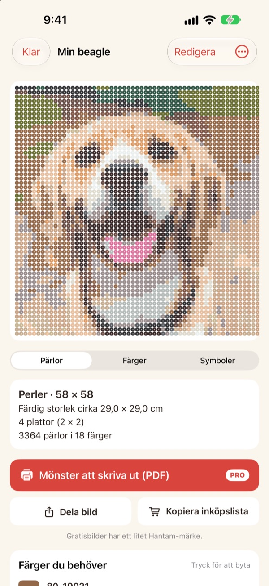
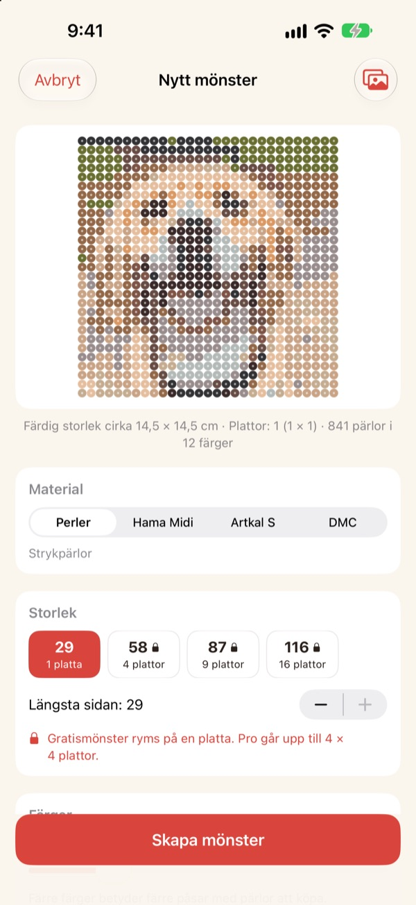
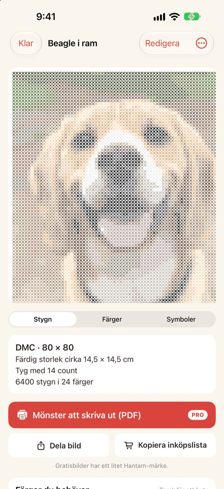
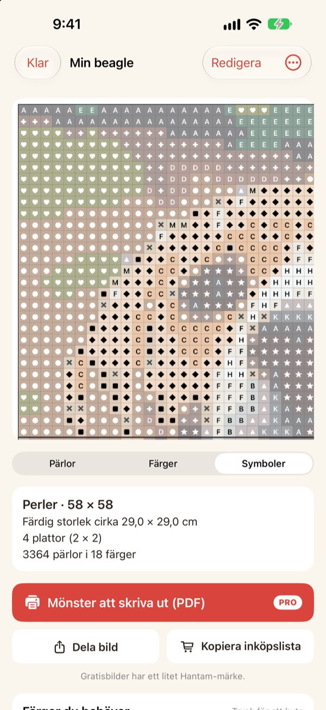
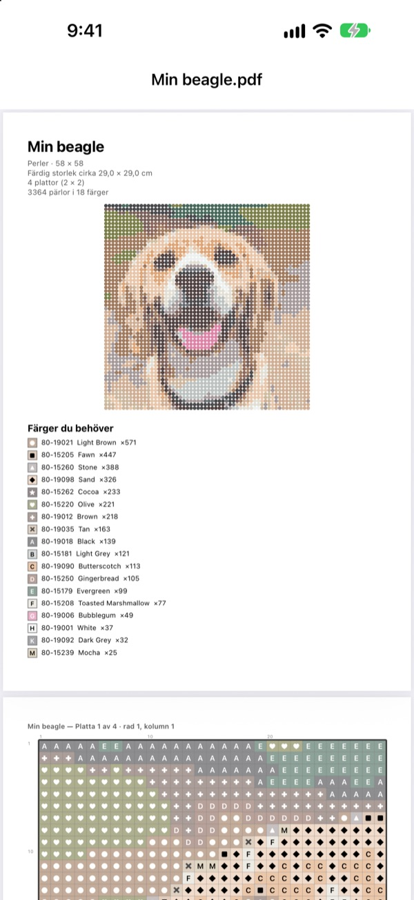

Ett foto
blir ett mönster
Välj ett foto på ditt husdjur, dig själv eller din favoritfigur. Hantam gör om det till ett mönster för strykpärlor eller korsstygn, i färger som du kan köpa.
Gratis för mönster på en pärlplatta. Dina foton lämnar aldrig din iPhone.

Prova på ett foto
Samma färgmatchning som i appen, med Perlers riktiga färgkarta. Ändra storlek och antal färger, eller prova med ett eget foto.
Ett mönster är lätt. Att träffa riktiga pärlfärger är svårt
Pixlar du ett foto i ett vanligt redigeringsprogram blir det färger som ingen pärla eller garn finns i. Sedan får du gissa vilken burk varje ruta hör till och räkna hur många av varje du ska köpa. Hantam väljer bara bland färger som faktiskt säljs och säger exakt hur många du behöver.
Riktiga färger, riktiga nummer
Välj pärlor från Perler, Hama Midi eller Artkal S, eller DMC-garn. Varje ruta får en färg som märket faktiskt säljer, med färgnummer.
Du bestämmer storlek och antal färger. Stora mönster delas upp i pärlplattor på 29 × 29.

Korsstygn också
Välj DMC-garn så blir samma foto ett korsstygnsmönster. Välj Aidaväv med 11, 14, 16 eller 18 rutor per tum så visar Hantam färdig storlek och antal stygn för varje färg.

Du vet exakt vad du ska köpa
Växla till symbolmönstret och följ det ruta för ruta, med tjocka linjer vid varje plattkant eller vart tionde stygn. Se hur många pärlor varje färg behöver och använd Kopiera inköpslista med ett tryck.
Tryck på en ruta för att ändra den, eller byt en färg mot en annan överallt.

Skriv ut och sätt igång
Med Pro exporterar du ett Mönster att skriva ut (PDF): först färglistan, sedan symbolmönster sida för sida, en pärlplatta i taget.

Tre steg till mönstret
- 1
Välj ett foto
Husdjur, ansikten, logotyper och figurer fungerar. Foton med ett tydligt motiv blir bäst.
- 2
Välj pärlor eller garn
Bestäm märke, storlek och antal färger.
- 3
Sätt igång
Följ mönstret på skärmen eller skriv ut det med Pro.
Material och storlekar
- Perler · Hama Midi · Artkal S
- Strykpärlor, pärlplattor på 29 × 29, varje pärla ca 5 mm
- DMC
- Korsstygnsgarn på Aidaväv med 11, 14, 16 eller 18 rutor per tum
- Gratis
- Pärlor upp till 1 platta (29 rutor), garn upp till 40 stygn på längsta sidan
- Pro
- Pärlor upp till 4 × 4 plattor (116 rutor), garn upp till 200 stygn
- Färger
- Från 2 till 50 per mönster
Perler, Hama, Artkal och DMC är varumärken som tillhör respektive ägare. Hantam har ingen koppling till dem. Färger på skärmen kan se lite annorlunda ut än i verkligheten.
Börja gratis. Pro för stora mönster och utskrift.
Gratis
- Mönster upp till en pärlplatta eller 40 stygn
- Alla märken: Perler, Hama, Artkal och DMC
- Antal per färg, inköpslista och färgbyte
- Upp till 3 sparade mönster
- Dela bilder med ett litet Hantam-märke
Hantam Pro
- PDF-mönster att skriva ut
- Upp till 4 × 4 pärlplattor eller 200 stygn
- Obegränsat antal sparade mönster
- Bilder utan märke
- Alla pixelkonstverktyg
Månads- eller årsabonnemang, eller ett köp för alltid
Du kan också ge bort Pro som present till en vän direkt i appen.
Vanliga frågor
Laddas mina foton upp någonstans?
Nej. Foton och mönster behandlas och sparas bara på din iPhone.
Färgerna ser lite annorlunda ut än mina pärlor.
Skärmar visar färger annorlunda än plast och garn. Tryck på en färg i listan för att byta den mot en närmare färg från samma märke.
Hur stort kan ett mönster bli?
Gratis ryms det på en pärlplatta på 29 × 29 eller 40 stygn på längsta sidan. Med Pro upp till 4 × 4 plattor (116 pärlor) eller 200 stygn.
Vilka foton blir bäst?
Foton med ett motiv och en enkel bakgrund. Ju färre färger, desto renare mönster, så sänk antalet färger om resultatet ser rörigt ut.
Kan jag fortfarande göra pixelkonst?
Ja. Pixla foton, rita efter 110 förlagor och animera bild för bild finns kvar. Alla pixelkonstverktyg ingår i Pro.
Hur återställer jag mitt köp?
Öppna inställningarna i appen och tryck på Återställ köp. Använd samma Apple-konto som du köpte Pro med.
Hur avslutar jag prenumerationen?
Gå till Inställningar på iPhone › ditt namn › Prenumerationer och välj Hantam. Livstidsåtkomst är en engångsbetalning och förnyas aldrig.
Hur rapporterar jag ett fel eller föreslår en idé?
Snabbast är att skicka feedback från appens inställningar. Du kan också mejla till adressen nedan eller skicka ett DM på Instagram (@lee25_ios).
Frågor, fel och idéer tas gärna emot på leeo@kakao.com.